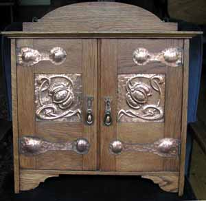
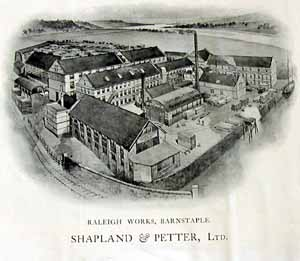
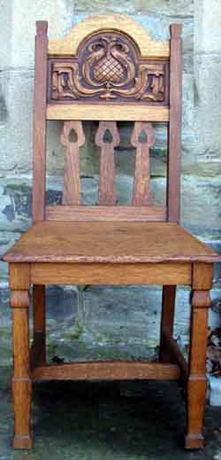
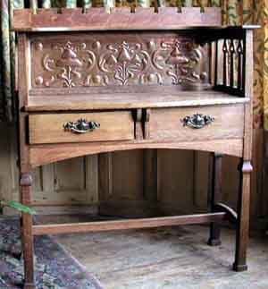
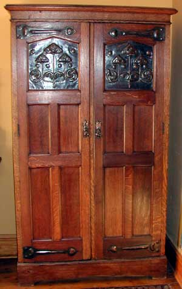
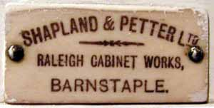

Introduction.
This Barnstaple based company manufactured some of the finest pieces of furniture in Arts and Crafts style but very little has been written about the company or the pieces they produced. It a great shame that whilst Shapland and Petter pieces have been illustrated in books and auction catalogues they are invariably attributed to other makers such as Liberty and Co in London or Wylie and Lochhead in Glasgow. With this feature, we intend to inspire a more thorough appreciation of the work of the company; readers are invited to help with the task by sending photographs and information.

Collectors and auction houses are now showing significantly more interest in Shapland and Petter pieces. The company, based in Barnstaple, England produced a very wide range of furniture in several different styles including many pieces in period reproduction and municipal style for town halls and commercial premises alongside their superb Arts and Crafts range.
Distinctive features of their superb Arts and Crafts style are the use of heart shaped piercing, geometric shapes with angled arches and the application of repousse copper panels. Decoration with marquetry, metal inlay, mounting of ceramic and enamel cabochons were techniques which they mastered with a combination of state of the art technology and traditional craftsmanship. Most distinctively, the pieces were extremely well made, with care and very best quality materials.
The growing interest in Shapland and Petter has raised many questions about the origins of the firm, and the sources of influence on their designs, some of which resemble designs by Ashbee, Ballie Scott, Voysey and Talwin Morris. Links have been assumed with Liberty and Co with the supposition Shapland and Petter worked on commissions for Liberty. There appears to be little evidence to support many of the assumptions which have developed around the company and this article is intended to help to start the discussion and to stimulate research.
The History of Shapland and Petter.
The Museum of North Devon in Barnstaple have an archive of Shapland and Petter which includes some company records and a small display of furniture and related items. The following text gives history of the company and is reproduced from the display boards in the museum with kind permission of North Devon Museums.
For over 100 years the Shapland and Petter factory has stood at the end of Barnstaple Long Bridge. Manufacturers of doors, door sets, and custom wood interiors, NT Shapland and Petter Ltd are still one of the towns largest employers. The company was established by Henry Shapland (b. 1823), a cabinet maker by trade. He embarked on a voyage to America in 1848, where he was inspired by an invention for a wave-moulding machine. He was only allowed to see it if he left the country immediately. Returning home with only rough notes, he reproduced the machine and in 1854 began a cabinet making business in one room at the Raleigh woolen mill in Pilton. Later the firm moved to Bear Street in Barnstaple. Henry Petter was an accountant who entered into partnership with Mr Shapland. The business progressed and in 1864 they bought the Raleigh Factory where Shapland first began his work. Success was rapid, but in 1888 the building burnt down. Immediately work began on a bigger and better factory - their present site by the Long Bridge - which included many modern inventions.

The two Henrys died within two years of each other - Petter in 1907 and Shapland in 1909. In 1924 Shapland and Petter merged with the Barnstaple Cabinet Company, producing North Devon's biggest industry. During the First World War Shapland and Petter's skilled craftsmen turned their hands to wooden propellers for the aircraft of the Royal Flying Corps. After the war, public tastes changed, and hand carved furniture was too expensive for many. Shapland and Petter's output now included elegant veneered pieces with smooth Art Deco lines. The company fitted out Pullman carriages and ocean liners and made hand-carved church furniture. The famous England Rugby Captain W. W. Wakefield was appointed Company Director in 1927. Throughout the depression of the late 1920's and early 1930's the company still managed to produce high quality work.
Furniture manufacturing continued until the outbreak of the Second World War in 1939. Many workers left to fight, while the factory worked on Air Ministry contracts for ammunition boxes. After the war came radio cabinets and laboratory and contract furniture, until eventually large quantities of doors were being produced for hospitals, hotels, schools, offices and other buildings. Examples of Shapland and Petter's work can be seen all over North Devon. In Barnstaple, the shop front at 109 High Street is a good example, and the interior of the old Lloyd's Bank, now Chamber's Brasserie, was also Shapland's work. Examples of carving by Shapland's men can be seen in two chairs and a reading desk in Barnstaple Parish Church.

As cabinet makers, Shapland and Petter employed up to 350 people at a time. There were designers, carvers, cabinet makers, machinists, polishers, and labourers. The company was one of the first to install American labour-saving devices and was keen to adopt the most up-to-date machinery.
The fire of 1888 at the Raleigh Cabinet Works was a huge loss for the company. However, it resulted in a new factory which was altogether more modern and better equipped. The new building by the river was arranged into blocks. The production line began with the saw mills and ended with the finishing rooms. There was modern machinery in every department - one of their saws was the first of its kind in Britain. Water sprinklers and electric lights were a necessity - this factory would not burn down.
As well as the furniture production, Shapland and Petter imported timber by sea and rail. The new factory 's facilities were exceptional.
Shapland and Petter were renowned for excellent design and workmanship. The carvers were highly skilled, serving seven year apprenticeships and attending classes at the Barnstaple School of Art. Ornately carved furniture required up to a hundred tools.
The factory produced made to order woodwork for banks, hotels, and shops; mantelpieces, paneling and staircases. They fitted out Pullman railway carriages, the London Guildhall, and Edgar Wallace 's dining room as well as houses like Tapeley Park in North Devon.
Much of the work involved intricate leaded glass panels, or inlaid fruitwood designs, like the white bedroom suite shown in the exhibition here. This type of work is typical of Art Nouveau 1895 to 1910, inspired by the fluid shapes of plants and flowers.
Many pieces were made from standard designs. There were hundreds to choose from, and a selection could be seen in local and London showrooms and in catalogues. Although mass-produced, this furniture was well-made by skilled technicians and modern machinery.
Arts and Crafts designs of Shapland and Petter
The development of the Arts and Crafts Movement in the South West of England has not been written up in any detail though we do know of the Art Potters of Barnstaple from the excellent book of this name by Audrey Edgeler. Less is known of the Barnstaple Guild of Metal Workers. We know of the Bath Cabinet Makers and the Newlyn School of Industrial Art in Cornwall but very little has been written about the furniture makers of Barnstaple in Devon.
The establishment of a large cabinet making firm in Barnstaple is not remarkable in itself; there were several cabinet makers in the area. What is interesting is that this particular Barnstaple firm should become a leading maker of Arts and Crafts furniture, copying the styles of the leading Architect designers and creating their own unique style.

Critics may point out that as their work was commercially driven and reliant upon machines it therefore does not really qualify as Arts and Crafts. Whilst the company was highly innovative in machine technology, they also employed many craftsmen who worked with their hands in woodcarving, marquetry work, design and application of decorative copperwork and other artistic embellishment in the true Arts and Crafts tradition. Anyone who has experience of Shapland and Petter workmanship knows the level of craftsmanship invested in each piece.
Sources of Inspiration
There appears to be no evidence to link any known architect, artist or designer to the Shapland and Petter company. Their designs appear to have been created solely by their own internal design staff none of whom appear to have published or registered their work in any other context.
C. R. Ashbee who established the Guild of Handicrafts visited Barnstaple in 1893 and provided a twelve week course on the design and decoration of furniture. It is presumed that this visit was hosted by Shapland and Petter, and that their own staff and those from other local furniture makers attended the course. Ashbee appears to have been unimpressed by the commercial attitudes he encountered and apparently disappointed at the lack of interest in his (high minded) lectures. What is interesting however is the similarity between some of his designs and those used by Shapland and Petter, particularly in respect to inlaid floral design. Perhaps he left a lasting influence which has not yet been verified.
There has been some speculation on the influence of Scottish designers, particularly because of the use of Glasgow rose designs which are typical of the Glasgow School, and particularly of Talwin Morris. There are also several designs which use similar motifs to those used by Baillie Scott, the use of two doves in flight for example. More research is needed to trace possible links here. One thing that is clear is that there was a great deal of copying and selling designs in the furniture industry at the time and a nineteenth century survey on the furniture trade recorded that '' Barnstaple pays the best prices for designs ..'' .
Collaboration with other companies.
There is evidence that Shapland and Petter organised a wide network of companies to retail their products and hence many pieces have the labels of retail furnishers added. Little is known of their marketing in Europe and America but it may be that many Arts and Crafts pieces were sold abroad. Shapland and Petter had excellent access to rail and shipping lines for importing timber and presumably for exporting their finished products.
The extent of their collaboration with other companies is yet to be ascertained but there is evidence that their suppliers included the Della Robbia Pottery, Pilkingtons Tile Company, Loache and Clarke Art Metal Work manufacturers and the Brannam Pottery. It is clear that Shapland and Petter produced for many retailers across the country including Morris and Co, Wylie and Lochhead, Maples, Waring and Gillows, Pratts of Bradford as well as many other smaller retailers who put on their own labels.
Liberty & Co?
One popular theory is that Shapland and Petter worked to supply Liberty and Co in London. It has been supposed that Liberty provided their designs to Shapland and Petter to make up. However no evidence has yet come to light in the company records of either company to suggest they ever did business with each other, nor are there any designs in any of the Catalogues or Handbooks which Liberty produced which illustrate items that we know were produced by Shapland and Petter. Many Shapland and Petter pieces have been wrongly attributed to Liberty in books and auction catalogues. Some dealers have cited the L and C stamp on metalwork as evidence that the piece was made or sold by Liberty's. Evidence provided by the Public Record Office at Kew in London proves beyond doubt that L and C is the registered mark for Loache and Clarke, a Birmingham Art Metalwork manufacturer, and not Liberty and Co.
A more plausible theory on the relationship between Liberty and Co and Shapland and Petter is that they were in fierce competition, there is evidence of several designs which appear to have been copied but with distinct differences to prevent litigation for piracy. Shapland and Petter did have an office in London in 1901 in Berner Street, 5 minutes walk from Liberty's and would no doubt had plenty of opportunity to take notice of the latest designs on sale at Liberty's and vice versa. There is however some recent evidence that Liberty & Co did occasionally stock items made by Shapland and Petter, a stick stand by Shapland and Petter was included at a Wooley and Wallis auction with an origional Liberty Label.
Collecting Shapland and Petter.
The growth of interest in Shapland and Petter in the last 5 years has driven up prices and there is less chance of good pieces passing through auction unrecognised. The good news for new collectors however is that there were a great number and variety of pieces made and sold in Britain so it is still possible to build up a collection of choice pieces which have classic Arts and Crafts Style but are also affordable and practical to live with.
Shapland and Petter did produce a wide range of furniture styles with Jacobean and other revival styles as popular lines but clearly these have virtually no interest for collectors. Stained Ash and Mahogany pieces tend not to be in much demand and white painted items need to have very stylish lines in order to attract buyers. A Glasgow style bedroom suite with Pilkingtons Tiles and copper panels with Glasgow rose design was sold for five thousand pounds in Glasgow in 2005, setting a record for Shapland and Petter white furniture. Prices have risen significantly since then for the very best pieces, beds with Glasgow style inlay in particular being much appreciated
Currently collectable items are those in oak which feature elaborate decoration either with copper panels and hinges, with inlaid pewter, or with marquetry. Decoration includes application of green ceramic discs, peacock blue green enamel hearts and cabochons, sometimes set into copper panels. Elaborate copper work was also used in the form of pierced strapwork or tracery covering glass doors or as hinges. Items with mottos occur very rarely as do items with pictorial inlay or painted panels. Stained glass was also used occasionally.

One distinctive feature in construction is the use of squared tapering spindles in the form of elongated diamond shapes. No other company appears to have used these shapes, possibly because they did not have the technology to make them. The use of copper panels is also a particularly attractive feature on some of the best Shapland and Peter pieces. Panels which have been inspected seem to have been hand beaten, with pencil marking and hand chasing clearly visible on the reverse. It does however remain a mystery who designed and made these panels, and the extent to which machine presses were used is uncertain, (but unlikely). One line of enquiry on the origins of the metalwork will be to research the Barnstaple Metal Workers Guild,which was established by two workers at the Brannam pottery who may have been assisted or advised by C. R .Ashbee.
Shapland and Petter design applied to furniture has a distinctive vocabulary of plant motifs often depicting seed pods, honesty leaves, roses, thistles, buds and leaves in stylised matrices. In some cases designs could be considered as influenced by Art Nouveau with whiplash curves. Whilst some Shapland and Petter pieces are considered too fussy or elaborate for Arts and Crafts collectors their restrained pieces have a subtle charm. The design and the quality of the wood used give quiet reassurance to those who are fortunate enough to own them. Alongside these pieces there are also the heavily adorned medieval style pieces with copper panels and metalwork which are soon to become recognised as classics of British Arts and Crafts design.
Help us with this feature.
The author is very keen to learn about Shapland and Petter would be very pleased to hear from people who have trade leaflets, records, photographs or memories of the company and would encourage people with items of significant interest to contact the Museum of North Devon which is the official guardian of the archive relating to the Shapland and Petter company. The museum is also pleased to hear from people wishing to donate significant items for their collection.

This feature will be expanded in the near future and we would be pleased to hear or receive articles from people with knowledge of designers involved with the company . We will also be very keen to see and publish your photographs of significant items . Please contact us.